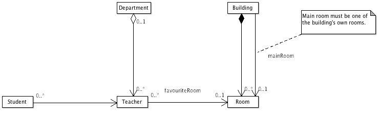

business/src/main/java/jumpstart/business/domain/workout/README.html
The workout package contains entities that model many relationship types:
- Department is an aggregation of Teachers.
- Building is a composition of Rooms.
- Student has a mandatory association with a Teacher.
- Teacher has an optional association with a Room (the teacher's "favourite" room).
- Building has an optional association with a Room (the building's "main" room).

These classes are not really part of the application. They've been put here solely to give the
business layer's persistence and exception handling a "workout" (ie. testing) without
disrupting the data in the app's real entities.
To give them a workout, run the
integration tests.
Problems? Eclipse might not be ready for junit - see
Could not create task or type of type: junit.
- business/src/test/java/jumpstart/business/domain/workout
- business/src/test/java/jumpstart/business/commons/exception
The diagram above comes from the workout.zargo file which can be edited with the free tool ArgoUML.
You can launch ArgoUML by Java Web Start by clicking here.
If it downloads without launching, just open the downloaded file.
For details visit http://argouml.tigris.org.